Zoom
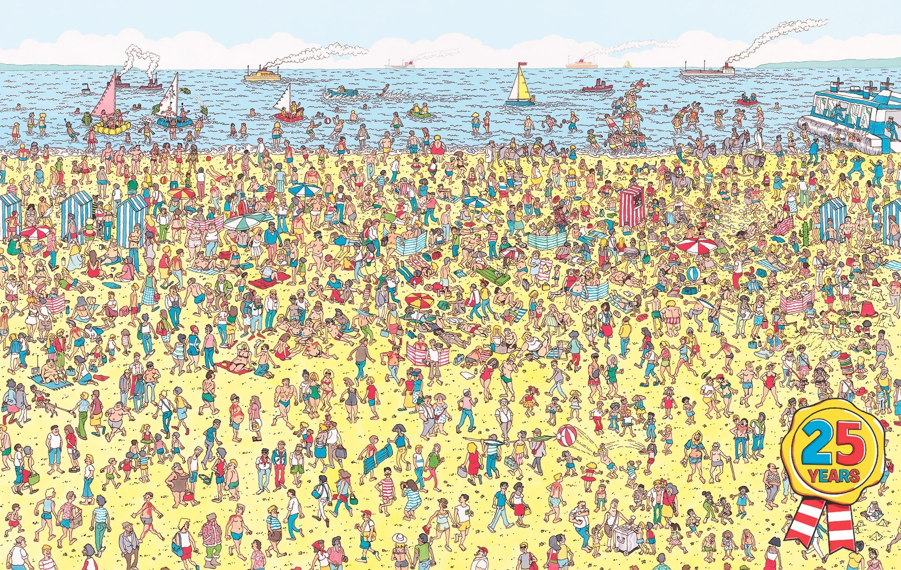
영국 작가 마틴 핸드포드의 대표작인 '월리를 찾아라!' 시리즈는 1987년 영국에서 처음 발매된 이후 지금까지 전 세계 32개국 언어로 번역돼 약 6천500만부 이상 판매된 세계적인 베스트셀러다. 동그란 뿔테 안경에 빨간색 방울이 달린 모자를 쓰고 흰색과 빨간색이 섞인 줄무늬 상의를 입은 월리를 비슷비슷한 옷차림을 한 수많은 사람 속에서 찾는 내용의 이 책은 1990년 대교출판을 통해 국내에도 소개됐으며 당시 큰 인기를 누렸다.
overflow-Y
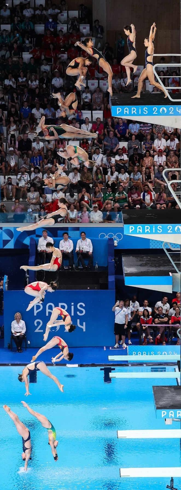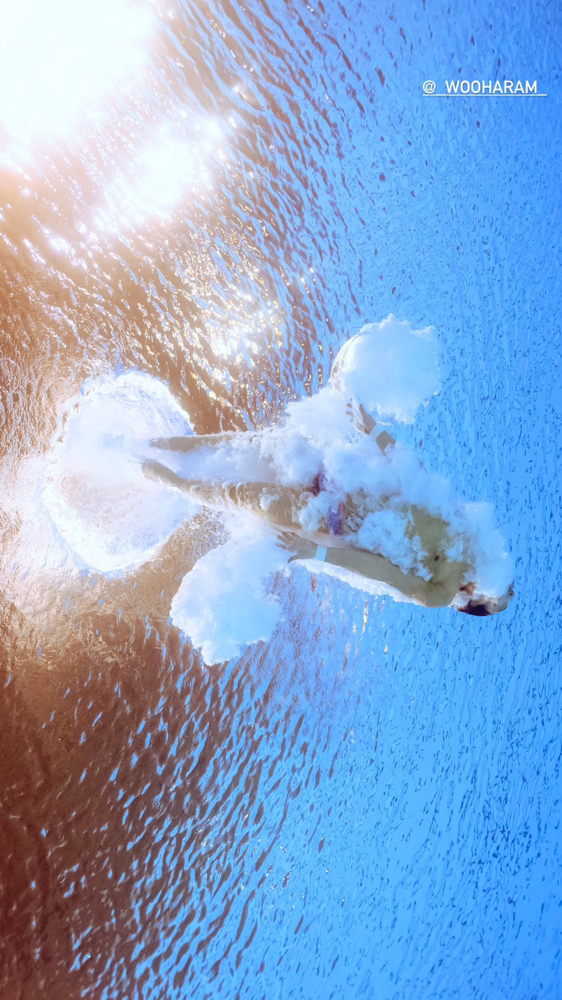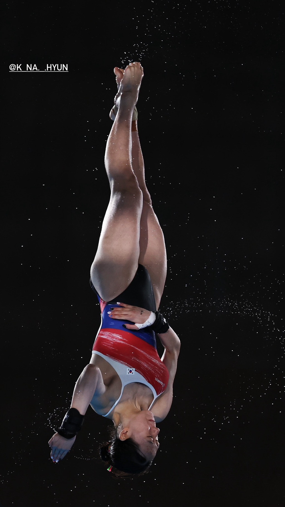
overflow-X
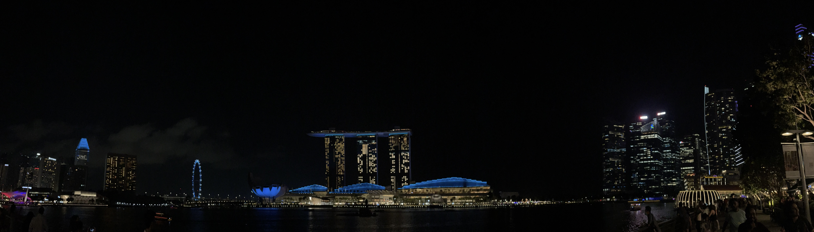
싱가포르에서 파노라마로 한 컷...
Writing-mode
이 사건의 주인공인 얼룩말 세로.
서울시설공단 공식 유튜브 채널에서 탈출 2개월 전 올린 소개 영상에 의하면 양친이 모두 죽고 나서 반항기를 지낸 것으로 소개되어 있다. 엄마의 이름은 루루(2005년 ~ 2021년), 아빠의 이름은 가로(1999년 ~ 2022년)[12]라고 한다. 부모의 '껌딱지'로 불리던 세로는 사람으로 따지면 사춘기가 막 지난 청년 시기로, 부모를 모두 여의고 반항이 심해졌다는 게 동물원 측의 설명이다. 참고로 얼룩말의 수명은 20년 정도라 가로와 루루는 인간으로 따져도 상당히 늙은 개체였다. 세로는 노부부의 늦둥이였던 셈. 게다가 세로의 옆에 있는 우리를 쓰는 붉은캥거루에게 시비까지 걸렸는데 사육사의 설명에 의하면 캥거루 입장에서 세로가 기웃기웃거리는 것을 자기 영역을 침범했다고 여겨 시비가 걸린 것 같다고 했다. 싸움을 했다는 증언도 있는 것으로 보아 초원이 아닌 동물원이라는 낯선 환경에서 태어난 데다가 유일하게 의지할 기둥이었던 부모마저 폐사하는 바람에 스트레스가 누적되면서 끝내 탈출을 감행한 모양.
Vertical-align
. 
終止符 / (미)Period, (영)Full stop
 고전 그리스어에서 위에 찍는 점(˙, 스티그메 텔레이아) 혹은 중간에 찍는 점(·, 스티그메 메세)으로 문장을 종결하던 전통에서 유래했다 시간이 흐르면서 점차 점의 위치가 내려가 오늘날과 같이 아래에 찍는 점이 되었다
고전 그리스어에서 위에 찍는 점(˙, 스티그메 텔레이아) 혹은 중간에 찍는 점(·, 스티그메 메세)으로 문장을 종결하던 전통에서 유래했다 시간이 흐르면서 점차 점의 위치가 내려가 오늘날과 같이 아래에 찍는 점이 되었다 한글 맞춤법에서는 문장의 마침을 의미하는 온점()을 뜻한다 같은 의미의 한자어로
한글 맞춤법에서는 문장의 마침을 의미하는 온점()을 뜻한다 같은 의미의 한자어로  종지부(終止符)라는 단어가 있는데, 무언가를 끝맺을 때 종지부를 찍다라고 하는 관용구는 문장에 종지부, 즉 마침표를 찍듯 끝을 맺는다는 의미로 쓰인다
위의 점은 온점이라는 개별 명칭으로도 불린다
종지부(終止符)라는 단어가 있는데, 무언가를 끝맺을 때 종지부를 찍다라고 하는 관용구는 문장에 종지부, 즉 마침표를 찍듯 끝을 맺는다는 의미로 쓰인다
위의 점은 온점이라는 개별 명칭으로도 불린다
U

누군가 자살했다고 들을 때면, 나는 너를 떠올린다. 그렇지만 누군가 암으로 죽었다고 하면, 나는 암으로 죽은 내 할아버지나 할머니를 떠올리지는 않는다. 그들은 수많은 사람과 죽음을 공유한다. 하지만 너는 자살의 주인이다. 폐허는 우연이 만들어 낸 미학적 결과물이다. 그것 을 일부러 아름답게 만들 수는 없다. 우리는 의도적으로 폐허를 만들지 않으며, 관리하지도 않는다. 폐허는 밑으로, 그리고 무더기에 가까워진다. 가장 멋진 것은 무너진 이후에도 여전히 서 있는 것들이다.
에두아르 르베, 자살
Text decoration style
보기 좋은 떡이 먹기도 좋다는 속담이 있습니다. 블로그도 마찬가지인데요, 깔끔하게 정돈되어있는 블로그는 방문자들에게 좋은 인상을 줄 뿐 아니라 글을 읽는 데에도 집중할 수 있게 도와줍니다. 저는 심플한 것을 좋아하기 때문에 블로그도 최대한 심플하게 유지하려고 노력하는 편입지만 개인마다 의견이 다르기 때문에 각자 개성에 맞게 꾸미는 방법이 다를 겁니다. 티스토리는 자유도가 높아서 다양한 방법으로 블로그를 꾸밀 수 있는데요, 이번 포스트에서는 제가 생각하는 깔끔한 블로그로 꾸미는 몇 가지 팁들을 알려드리도록 하겠습니다. 출처: https://torotoblog.tistory.com/76 [토로토 블로그:티스토리]
Shape-outside
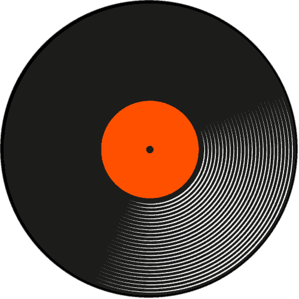
‘구동방법’이라고 하니까 말이 낯설어서 어색할지도 모르겠다. 그냥 별 얘기 아니고 턴테이블에 있는 동그란 원반을 돌리는 방법이라고 생각하면 된다. LP를 얹는 동그란 원반을 플래터(Platter)라고 부르는데, 이것을 어떤 방법으로 돌리느냐에 따라 나누는 것이다. 대략 아이들러(Idler)형, 벨트(Belt)형, 다이렉트(Direct)형, 이렇게 세 가지 형태로 분류한다. 생소한 용어들이 나왔다. 외울 필요는 없다. 앞으로 나오는 설명을 읽다 보면 자연스럽게 익혀지게 될 것이다.
Rotate
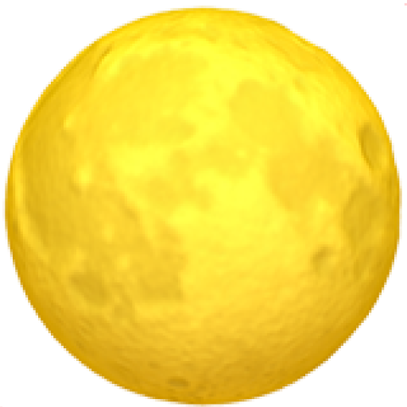Q
Q. 요즘은 책 말고 영화, 드라마로 이야기를 표현하는 수단이 미디어 쪽으로 확장되는데 영화 감상이 책 읽는 것만큼이나 교양과 지혜를 쌓는 데 도움이 될까요?
영화는 말하자면 술 같은 거구요, 책은 물 같은 거예요. 책은 우리를 좋은 의미에서 차갑게 만들어주고, 영화는 뜨겁게 만들어주는데요. 이성은 기본적으로 차가운 겁니다. 질문자님의 질문에 답변을 드리자면, 교양에 관한 한 영화는 책을 영원히 따라가지 못할 것이다. 왜냐면 이성의 속성 자체가 물 쪽에 가까워요.
Progress
click!!
 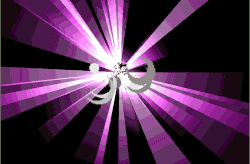
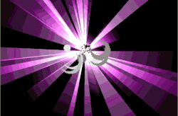
Ol
🧑🍳 간단한 마파두부 레시피 🧑🍳
- 된장, 고추장, 설탕, 굴소스, 고춧가루를 넣어 양념장을 준비한다.
- 양파와 파를 넣어 볶은 후, 맛있는 냄새가 나면 다진 고기를 넣어 볶는다.
- 고기가 익으면, 양념장과 두부를 넣고 푹 끓인다. 전분물을 조금 넣고 더 끓이면 완성!
- 그대로 맛있게 먹는다.
Nav
Mix-blend-mode
NMIXX는 미지수 n을 뜻하는 문자 'N'과 조합, 다양성을 상징하는 단어 'MIX'의 합성어로서 '새로운 시대를 책임질 최상의 조합'이라는 의미를 갖고 있다.
Letter-spacing
스페이스 바(Space bar , ␣)는 빈 공간을 입력하기 위한 글쇠이다. '스페이스'라고도 한다. 순우리말로는 '사이띄개'.[1] 기종을 불문하고 키보드에 있는 키 중 가장 긴 길이를 자랑한다. 길이는 키보드 배열에 따라 차이가 있다. 한국어의 경우 스페이스 양 옆으로 한자키와 한영키가 들어가서 약간 짧다. 한자/한영키가 있는 기계식 키보드는 스페이스바를 찾기가 힘든데 이점은 금속접점이 없는 광축용 스위치로 한자/한영키를 교체하면 6u나 7u스페이스바를 호환할 확률이 기하급수적으로 커진다. 광축스위치는 광센서 없이는 동작하지 않기 때문이다. 스페이스 바의 길이 때문에 영문 104키 키보드를 직구해서 쓰는 사람들도 있다. 게다가 같은 106키 키보드라도 규격이 통일되어 있지 않기 때문에 스페이스 바의 길이도 천차만별이다. 다만 한글 키보드라도 104키 배열을 사용하는 경우가 있는데, 이 경우 오른쪽의 Alt 키를 한영 키, 오른쪽의 Ctrl 키를 한자 키로 사용하게 된다.
KeyboardEvent
open the door to press "k"
Justify-center
그렇습니다. 얼굴을 내보인것도, FBI 12명을 희생시켜 버린것도... 제 패배입니다. 하지만 마지막엔 이길겁니다. 저도 목숨을거는 승부는 이번이 처음이죠. 하지만 목숨을 걸고 여기 모인 우리들이 증명해 보이는겁니다.
정의는 반드시 승리한다는 것을.
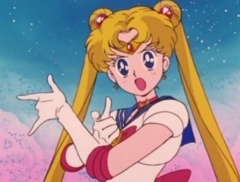
사랑과 정의를 지키는 귀여운 달의 요정 세일러 문! 정의의 이름으로 널 용서하지 않겠다!
Iframe
위의 영상을 참고하여 유튜브의 영상을 직접 적용하는 방법을 알아봅시다.
Hover


Gap
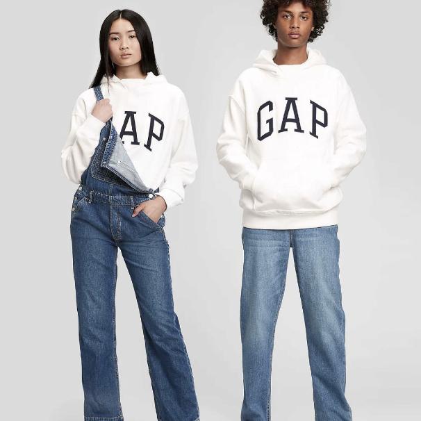 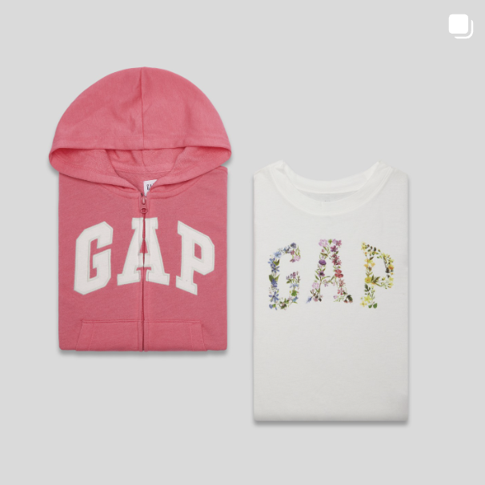 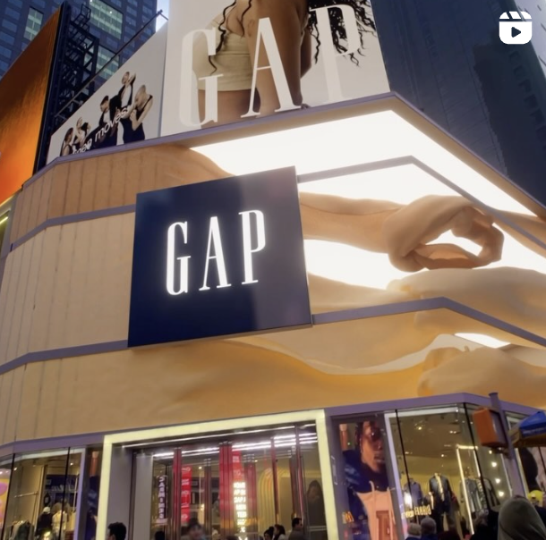 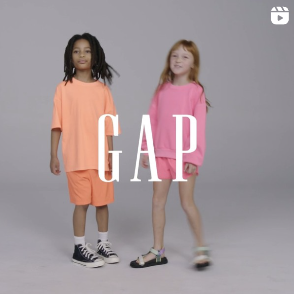
FadeIn, FadeOut
시간이 경과되는 것을 나타내는 장면전환 기법 중의 하나인 페이드인은 영상신호(또는 광량)를 점차 늘려 화면이 나타나게 하는 기법이며, 페이드아웃은 반대로 영상신호(또는 광량)을 점차 줄여 화면이 사라지게 하는 기법이다. 약어로 각각 FI/FO이라고 표시한다.
한편, 페이드아웃하는 화면이 사라지는 동시에 페이드인하는 화면이 나타나게 하여 두 장면을 유연하게 연결하는 연출기법을 디졸브라고 한다. 디졸브 기법은 페이드아웃 장면과 페이드인 장면의 밀접한 관계나 시공간의 변화 등을 암시하기 위한 의도로 주로 사용된다.
[네이버 지식백과] 페이드인 / 페이드아웃 (시사상식사전, pmg 지식엔진연구소)
Eventlistener

Details
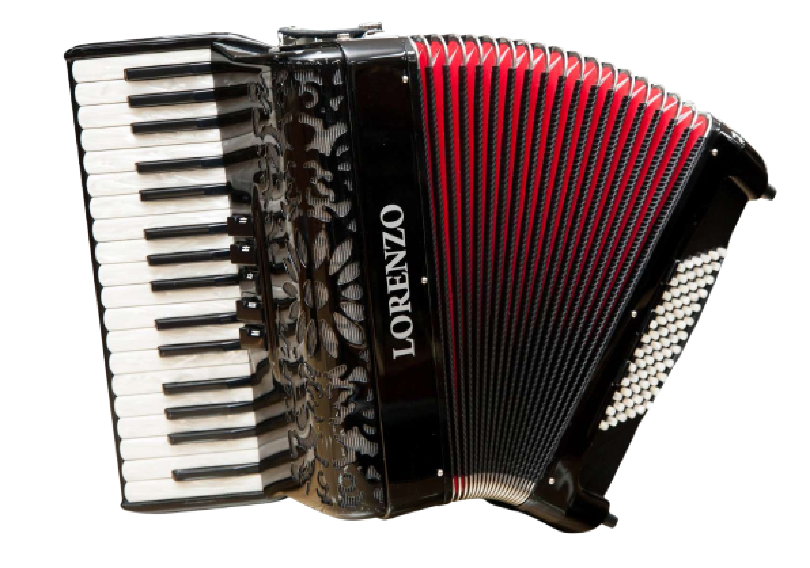
MR34372-BK, 가성비가 폭발하는 중저가 이탈리아산 아코디언으로 최고의 선택!
부속 하나하나 리드도 이탈리아에서 제조하여 부드럽고 온화하면서 낭만적인 소리가 특징입니다. 특히 귀가 따갑지 않은 부드러움이 특징입니다. 무게도 부담 없어 남녀노소 즐겁게 연주하기 좋습니다. 코스모스악기가 독점적으로 수입/판매합니다.무게: 8.7Kg
리드:3열
건반: 34건
베이스: 72
원산지: 이탈리아
Cursor
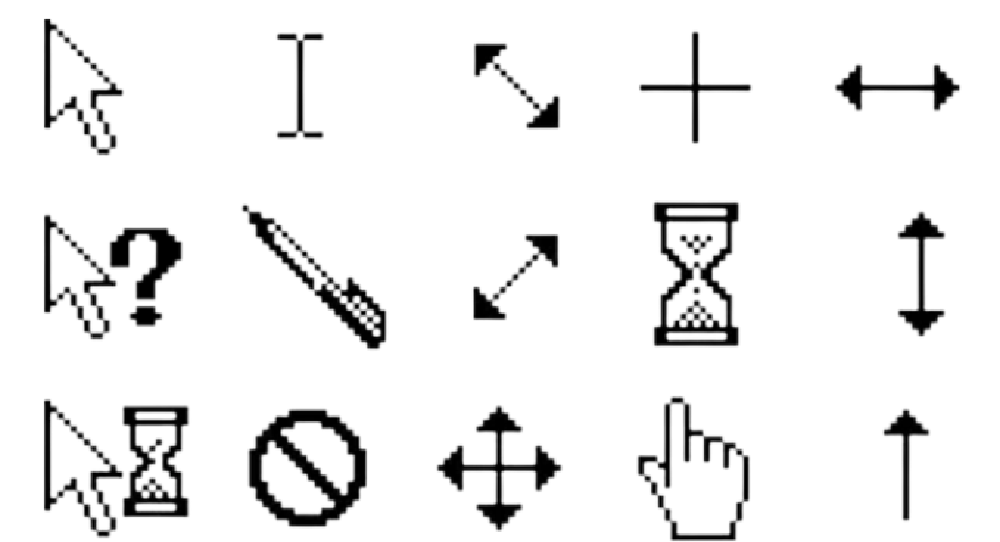
마우스 커서가 사라져서 당황하셨나요?
정상입니다. 제가 마우스 커서를 숨겼거든요...
안심하세요.
p.s. 마우스 커서 모양의 종류는 다양해요. 확대, 축소, 드래그, 로딩 등 다양한 상황에서 바뀌죠. 평소엔 커서를 의식하고 인터넷을 하진 않았는데, 종류가 다양하다는 사실을 새삼 깨달으니 커서의 모양이 바뀔 때마다 관찰하게 되더라고요. 이 글을 읽은 당신도 저처럼 커서의 모양을 의식하게 되겠죠?